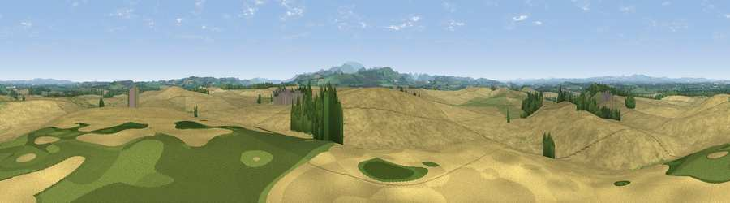

Viewpoint near Donaldson's Lodge
#17224 in England · top 62% of its area beats it · near Donaldson's LodgeWhere it is
The exact computed spot (NT 88443 40657). Click the marker for map links.
The view, rendered

A 360° render of this exact spot computed from the terrain model, tree cover and land cover — summer colours, afternoon light, calibrated against photographs of famous viewpoints. Real trees, hedges and buildings will differ in detail.
The panorama
Grey silhouette: terrain skyline in each direction (720 bearings, Earth curvature and refraction included). Dashed green: skyline with trees (+15 m) and buildings (+8 m) as obstacles. Blue strip: how far the ground is visible on each bearing.
Where the view opens
Wedge length = distance to the farthest visible ground on that bearing (vegetation-aware). Rings at 10, 25 and 50 km.
What fills the view
81% cropland · 13% grassland · 5% woodland ·
Angular shares of the visible panorama (visual magnitude), not map area. Landscape diversity 0.27 (0–1 Shannon).
Key numbers
More beautiful places nearby
The staircase of upgrades: each row has a higher view potential than everything closer. Driving times are estimates from straight-line distance, calibrated against real road routing — check an actual route before setting out.
| Place | Direction | Drive | Score |
|---|---|---|---|
| Mill Hill | NNE · 2 km | ~6 min | 60.3 |
| Viewpoint near Branxton | S · 4 km | ~10 min | 67.1 |
| Viewpoint near Branxton | S · 5 km | ~12 min | 73.6 |
| Moneylaws Hill | SSW · 6 km | ~13 min | 83.0 |
| Viewpoint near Kirknewton | SSE · 12 km | ~23 min | 86.1 |
| Greensheen Hill | ESE · 18 km | ~31 min | 87.5 |
| Viewpoint near Chillingham | SE · 25 km | ~40 min | 88.1 |
| Ullock Pike | SSW · 129 km | ~153 min | 89.4 |
55.65929, -2.18526 · source: osm peak · position refined by local search. Computed location — check access rights before visiting.